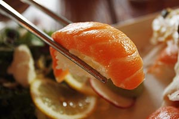
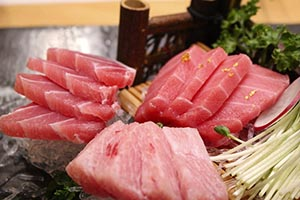
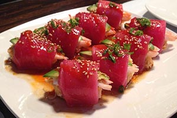

Bienvenue chez Esprit Sushi
Notre restaurant japonais vous accueille tous les jours dans une ambiance chaleureuse et conviviale. Nos sushis, makis et sashimis raviront vos papilles.
Nous vous proposons aussi un choix de plats chauds, de soupes et de boissons.
Tous nos produits sont issus de producteurs ou fournisseurs locaux et sont d'une grande fraîcheur. Ils sont préparés devant vous à la commande.
Notre restaurant est ouvert tous les jours :
- Le midi : de 12h à 14h
- Le soir : de 18h à 23h
Esprit Sushi dispose également d'un service traiteur pour vos soirées, anniversaires, entre amis ou en famille.
Vos avantages
- À emporter : -10%
- Wifi en libre accès.
- 
- 
- 